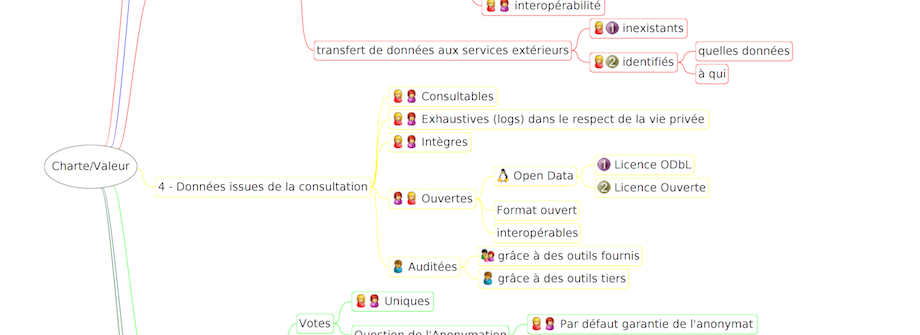

Charte éthique en matière d'outils numériques pour la confiance dans un gouvernement ouvert et participatif
Mis à jour le 2 juin 2016

Description du projet
"Charte éthique en matière d'outils numériques pour la confiance dans un gouvernement ouvert et participatif." L'objectif de cette charte est d'accompagner la démarche de gouvernement ouvert en renforçant la confiance dans les processus démocratiques mis en œuvre par des outils numériques.
L'objectif de cette charte est d'accompagner la démarche de gouvernement ouvert en renforçant la confiance dans les processus démocratiques mis en œuvre par des outils numériques. Elle propose une série de critères plus ou moins contraignants auxquels s'engagent le prestataire, l'initiateur de la démarche et l'utilisateur des outils numériques.
Servant de référentiel communautaire, elle aura pour vocation d'inspirer les démarches de gouvernements ouverts s'appuyant sur des outils numériques en guidant les initiateurs quant aux atteintes inhérentes à ces consultations et en outillant les utilisateurs pour préserver leur confiance dans le processus ouvert.
Elle a vocation à s'appliquer autant aux projets initiés par les gouvernements qu'à ceux nés de besoins collectifs.
L'atelier dans le cadre de ODN
Complémentaires aux réflexions menées en matière d'outils et de méthodologie, il est très tôt apparu comme nécessaire de définir une charte destinée à assurer la confiance dans l'usage des outils numériques utilisés pour un mouvement ouvert (et en premier lieu les outils de consultation en ligne et de cocréation de la Loi).
Ce projet a ainsi été initié à l'occasion du second point d'étape Open Democracy Now! et une première carte heuristique a été réalisée pour représenter les droits et obligations susceptibles de porter sur les prestataires, initiateurs ou encore utilisateurs de telles solutions.
Il s'agit dorénavant de peaufiner le travail qui a été réalisé (toute aide est bienvenue) et de faciliter la diffusion de cette charte en travaillant sur une iconographie qui représente simplement (et sur le modèle des licences Creative Commons) les principales dimensions éthiques devant accompagner les démarches de gouvernement ouvert. Pour ce dernier point, l'aide d'un graphiste serait particulièrement utile.

{kind=link}
Tous les projets
- A project has no name
- Blockchain & Démocratie
- Boîte à outils open gov
- Budget participatif
- Usages associés: boîte à outils open gov
- Charte du numérique
- Civic Test
- DemocracyOS
- Design & démocratie
- DroitDirect.fr
- Grandma'Votation
- #MAVOIX
- Nesquiz
- Nuances
- OpenBudget
- Logiciels libres dans l'administration
- AgoraLabTV
- Assembl